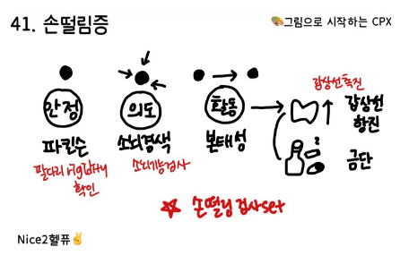

15. 떨림, 운동 이상

원인 | ||||
생리적 떨림 |
| |||
신경계 이상 | 파킨슨병, 본태 떨림, 소뇌 경색 등 | |||
기타 원인 | 갑상샘 항진, 알코올/약물 등 | |||
평가목표 1) 병력청취와 신체진찰을 통해 손 떨림의 특징을 파악 2) 원인을 감별하기 위한 적절한 진단 및 치료 계획을 수립 | ||||
구체적인 성과 | ||||
병력 청취
| 떨림의 특성/양상 파악 | r/o 근긴장도이상 Dystonia (손이 꼬이는 듯) r/o 틱 Tic r/o 무도증 Chorea (춤추는 듯한) r/o 근간대경련 Myoclonus (irregular jerky) [Tremor 전제 조건: 규칙적, 불수의적] - Resting: 파킨슨병, 윌슨병 - Action/Postural: 본태떨림, 말초신경병증 - Intention: 소뇌질환, 다발성 경화증 | ||
| 떨림의 동반 증상 확인 | 파킨슨병(서동 및 경직), 소뇌 징후(ataxia, dysarthria), 사지 감각저하 갑상선 항진(더위불내성, 체감, 설사), 정신(우울, 춤추는 듯-헌팅턴) | ||
| 떨림의 유발 요인 파악 | 약물 및 물질, 저혈당, 특정 작업 시(글쓰기, 물건 집기 등) | ||
신체 진찰 | 신경계 이상을 확인하기 위한 신경진찰 | PARI Resting Tremor: 무릎 위에 편하게 손 올리기 Postural Tremor: 자세 취하자마자 vs 3~5초 뒤에 나타남 - arm stretching position (원위부) - winged-beating position (근위부) Action Tremor - 원그리기, 문장 쓰기 Intention Tremor - finger to nose, rapid alternative, Gait/tandem gait, Romberg Sn 상지근력, Rigidity | ||
| 원인 감별을 위해 필요한 신체진찰 | V/S 체크(카페인, 약물, 갑상선, 저혈당) 갑상선 진찰, 눈 진찰(nystagmus), 틱 | ||
진단 | 신경계와 기타 원인 감별 | 영상 및 특수 신경계 검사 | 파킨슨병 | Brain PET |
|
|
| 소뇌 경색/출혈 | Brain CT/MRI |
|
|
| 다발성 경화증 | Brain CT/MRI, 뇌척수액 검사 |
|
|
| 근간대경련, 근긴장이상증 | EMG, EEG |
|
| 대사성 및 기타 원인 감별 검사 | 갑상샘항진증 | TFT |
|
|
| 저혈당 | 혈당 측정 |
|
|
| 알코올/약물 중독 및 금단 | 독성 선별검사 |
치료 | 질환별 맞춤 치료 | 파킨슨병 | Levodopa + carbidopa | |
|
| 본태성 떨림 | BB, BDZ | |
|
| 갑상샘항진증 | 항갑상샘제 | |
|
| 다발성 경화증 | 급성기 고용량 스테로이드, Interferon | |
|
| 근긴장이상증 | 항콜린제, botulinum toxin | |
| 급성 조치 및 응급 치료 | 저혈당 | 포도당 정맥 주사, 경구 포도당 | |
|
| 소뇌 뇌졸중 | 뇌압 조절 등 보존적 치료 | |
|
| 알코올/약물 금단 | 금단 시 BDZ, 약물 조절 | |
환자교육 | 안심(불편함에 대한 PPI) | (생리적) 스트레스나 피로 풀리면 정상 회복 (병적) 떨림 증상이 심하면 약물 치료로 조절 가능 | ||
| 회피/교정 | 유발 요인차단(카페인, 스트레스, 약물 확인) 음주 주의(일시적 호전이어도 금단 시 rebound), 틱 같은 경우 억지로 참지 X | ||
| 응급 | 몸에 힘이 빠지거나 말이 어눌, 극심한 두통, 의식저하, 경직, 고열 등의 경우엔 내원하도록 교육 | ||
질환 | 질환 설명 | 병력청취 | 신체진찰 | 검사 | 치료 | |
안정 떨림 | 파킨슨병 1+1 | 뇌의 도파민 부족으로 운동 조절기능이 저하 | unilateral(한쪽에서 다른쪽 진행_손,턱,입술,몸통)
| 운동 완만 rigidity, 자세불안성, 종종걸음 | Brain CT/MRI Brain PET | Levodopa + carbodopa Dopamine agonist |
활동/체위 떨림 | 생리적 떨림 1 | 누구에게나 있는 정상 미세 떨림 | 스트레스, 긴장, 불안, 과도한 운동, 카페인 |
|
| 안심 |
| 본태성 떨림 6+1 | 특별한 병 없이 신경활동이 과민 | 양쪽, 가족력 | (자세 취하자마자 발생하는) 자세/활동 떨림 |
| BB, 항뇌전증제 BDZ deep brain stimulation |
| 갑상샘 항진증 0+1 | 갑상샘H 과다로 몸 대사 빨라짐 | 더위불내성, 두근거림, 체중감소, 설사 | 갑상샘 종괴 촉진될 수 있음 | TFT | 항갑상샘제 |
| 알코올/ 약물 금단 |
| 남용의 과거력, 불안, 초조, 두근거림, N/V, 정신병적 증상(응급) |
| 독성 선별검사 | (알코올 금단) BDZ
|
의도 떨림 | 소뇌 경색 /출혈 1 | 움직임의 균형과 협조를 담당하는 소뇌 손상 | 의도 떨림, 목표에 가까워질수록 더 떨림, 뇌졸중 Hx/위험인자 | 소뇌기능검사 이상 | Brain CT/MRI | 보존적 치료 |
| 다발성 경화증 | 자가면역질환으로 수초 공격받아 신호 전달이 불안정 | 20~40대 여성 시력/시야 이상 감각/운동 이상 배변/배뇨장애 | 다발적인 신경학적 이상 | Brain MRI 뇌척수액 검사 | 고용량 스테로이드 인터페론 |
기타 운동 이상 | 근긴장도 이상 | 뇌의 운동 조절이상으로 지속적 근수축 | 지속/반복적으로 손이 꼬이는 자세, 움직임에 의해 시작/악화 |
| EMG | 항콜린제 국소 botox |
| 근간대 경련 | 신경신호가 갑자기 과흥분해 근육 불수의 수축 | 돌발적이고 짧은 전기 충격(움찔) 형태의 근수축, 최근 스트레스 |
| EMG, EEG, LFT | 보존적 치료 |
| 헌팅턴병 | 유전성 뇌 신경세포 손상 | 춤추는 양상, 신체 일부에서 서서히 전신, 가족력, 인지기능장애 |
| Brain MRI 유전자 검사 | 재활치료 |
| 반얼굴 연축 | 얼굴 신경이 압박받아 한쪽 저절로 수축 | 편측 얼굴 수축 반복 눈꺼풀->눈주위->얼굴아래,이마로 이동 |
| EMG Brain MRI | Carbamazepine, BDZ Botox, 수술 |
| 틱/뚜렛 증후군 | 뇌 신경회로 불균형 | 갑자기 빠르게 불규칙 운동/소리, 참을수록 욕구↑ |
|
| 혼내지 않고 F/U 만성 경과 시 약물 |
| 저혈당 | 뇌에 당 공급 부족, 신경 불안정 | 식은땀, 두근, 손떨림 |
| 혈당측정 | 포도당 정주/경구 |
| 약물유발 운동이상 | 일부 약물이 뇌 도파민회로 방해 | 항정신병제, 리튬, 위장약 |
|
| 약물 조절 |
| 직업특성 | 같은 동작을 반복하는 직업적 습관 | 특정 작업시 발생(주로 글쓰기) | 글씨 떨림 |
| BB, BDZ Botox |
| TIA |
|
|
|
|
|
O | 언제 | |||
L | 어디 (한쪽/양쪽) r/o 파킨슨 unilat, ET bilat 경향 진행: 처음에는 어디가 -> 지금은 어디어디 (떨리는 곳 전부 확인) | |||
D | 자주/지속 | |||
Co | 빈도/강도 | |||
Ex | 이전에도 | |||
C | 양상) 한번 보여달라 규칙적? or 불규칙적인 움찔거림? r/o tremor = 규칙 몸이 꼬이는지 r/o 근긴장 춤추는 느낌 r/o 헌팅턴 언제(P/A/R/I) 휴식 : 가만히 있을 때 r/o 파킨슨 자세 : 팔 들어올리거나 뻗은상태 r/o 본태/생리/갑상샘/알코올,약 행동 : 글 쓸 때 r/o 본태/근긴장/직업성 의도 : 물건 잡을때 r/o 소뇌/다발성경화증
정도) 일상생활 지장 (ET에서 약물 치료 여부 판단의 핵심) | |||
A | 뇌(눈입머리팔다리)파(걷기/서기/표정)갑상선정신 뇌졸중) 두통/어지럼/말어눌/팔다리힘빠짐/시야장애 갑기항) 더위/두근 정신불안/우울 r/o 헌팅턴, 약물 금단 개인적으론 없어도 될거같긴함(약물에서 확인) | |||
F | 악화 : 스트레스/긴장/커피/운동 r/o 생리적 공복 r/o 저혈당 완화 : 술 r/o 본태성 | |||
E | 건강검진 | |||
외 | 머리 | |||
과 | HTN/DM/고지혈증+ 뇌졸중/신경과+갑상샘 | |||
약 | 위장약, 정신과약(항우울/항정신/리튬) r/o 약물 유발 이상 운동 질환 최근 끊은거 r/o 약물 금단 | |||
가 | 가족력 r/o 본태성 | |||
사 | 음주/흡연/커피/스트레스(식사/운동/직업/) 이미 위에서 다 물어봐서 빠진것만 체크 | |||
여 | 떨리는 증상과 생리주기 연관성? r/o 생리적 | |||
PEx | 동의 구하기, 손 씻기 v/s확인-[떨림+팔다리+DTR+소뇌기능] | |||
| 기본 | V/S 확인 (혈압, 맥박, 호흡수, 체온) 1 눈: 빈혈 2 목: 갑상샘 촉진 + 얼굴 떨림 있을 때 뇌신경검사 : 동공반사, 안구 운동, 얼굴 감각/운동 | ||
| 떨림 | 1. 휴식 : 손 무릎 위에 올리셔 2. 자세 : 손 펴고 팔 앞으로 뻗으셔 r/o 본태성: 뻗자마자 // 파킨슨: 2-3초 이따가 3. 행동 : 팔꿈치 떼고 달팽이(양손) /이름 써보세요 r/o 본태성: 계속 파킨슨: 크기&간격 작아짐&양쪽 비대칭 가능 | ||
| 팔다리
| 1. 감각 : 촉각/통각 2가지 + 느껴지시나요 같으시나요 A. 위팔+아래팔/ 허벅지+종아리 : 상지2/하지2 2. 운동-상지 A. 팔 겨드랑이 들고 흔드는자세-> 위아래 버티기 B. 가드 자세-윗팔이 세로로 얼굴앞으로 올리기 -> 앞뒤 밀기 3. 운동-하지 A. 허벅지 씨름 : 다리 벌리고 모이기 B. 종아리 잡고 축구 차기+뒤로 땡겨보기 4. DTR : 힘 빼주세요 A. 상지-biceps : 엄지손가락쪽(팔 바깥쪽) 안에 두드리기 +) 오른손으로 팔꿈치 잡으면서 팔 지탱 + 힘줄부분 엄지로 눌러 +) 오른엄지로 누른 부분 위를 해머로 치기 = 내 엄지를 쳐라 B. 하지-무릎 : 한손으로 허벅지 눌러서 고정! 다른손으로 두드리기 +) 심심하면 바빈스키 해머 뒤로 발바닥 안쪽부터 새끼발까락까지 긁고 다시 엄지쪽으로 틀어서 긁는 ㄱ자 모양으로 둥글게 긁으세용 | ||
| Rigidity | 환자 팔다리 힘 빼라하고 내가 잡고 움직여보기 🡺 환자 팔꿈치나 손목 잡고 굽혔다 폈을 때 톱니바퀴처럼 걸림/뻣뻣 (+) | ||
| 소뇌 | [앉아서] finger to nose/ rapid alternating 1. 코에 손 댔다가 제 손가락 찍으셈 - 양손+왼/우/중앙 2. 허벅지에 손 올리고 빠르게 뒤집기 | [서서] gait/ tandem/ romberg 안넘어지게 주의 PPI 1. 일단 한번 갔다오세요(Turn) 2. 돌아올 땐 앞/뒷발 발가락/뒷꿈치 붙여서 걸어요 3. 발 딱 붙이고 서기 + 눈감으세요 | |
| 협조해주셔서 감사합니다. 불편한 건 없으셨나요? 손씻기 | |||
진단 계획 | 1 혈액검사 : 혈당, 갑상샘, 전해질 이상 2 영상: 뇌 CT/MRI : 구조적 이상 3 신경/근전도검사 : 신경이나 근육의 전도이상 감별 | [헌팅턴] 유전자 검사 | ||
치료 | 1. 파킨슨 : 부족한 도파민 보충 약물 기능 장애 늦추는 재활치료 - 크고 넓게 움직이고, 말하기 - 낙상 방지 (집안 문턱제거, 손잡이 설치) 2. 본태떨림: 베타차단제, 항뇌전증제, 신경안정제 3. 생리적 떨림 : 안심 4. 소뇌경색: 재활치료(정확도 높이기), 피가 굳는걸 방지하는 약 기저질환(HTN/DM) 관리해 재발 방지 | 1. 다발경화증 : 고용량 스테로이드 2. 근육이상 : 떨림 줄이는약 보톡스(근육일시마비) 3. 헌팅턴 : 떨림 줄이는약, 기분안정제 | ||
교육 | ||||
PPI | 궁금하신 점 있으실까요? | |||